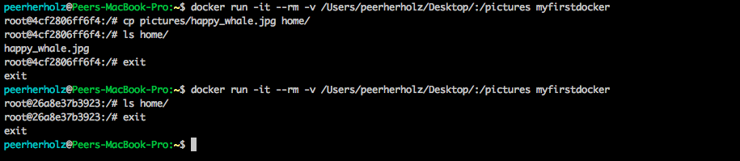
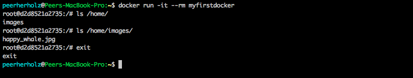
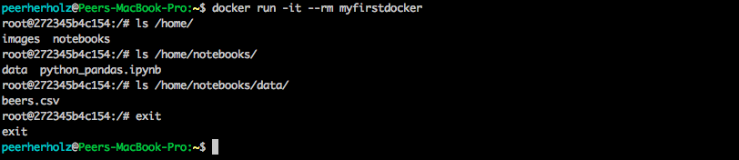
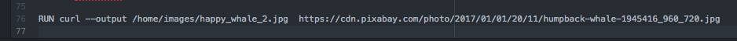
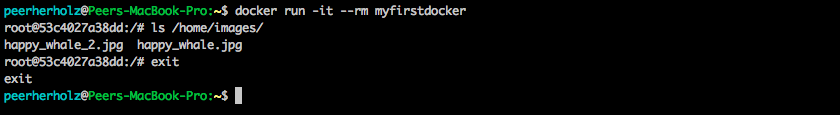
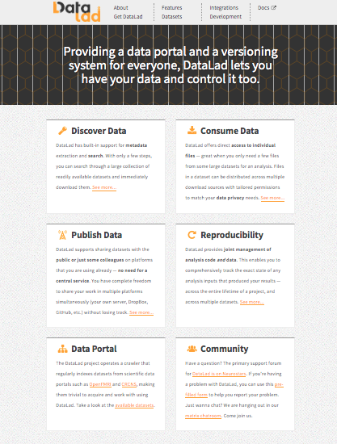
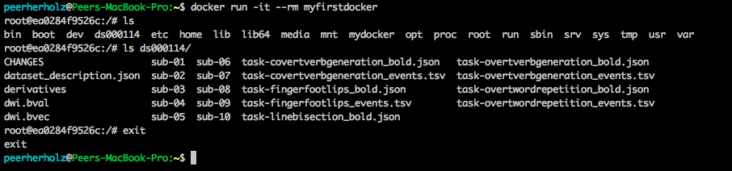

name: inverse layout: true class: center, middle, inverse --- # Docker & data ## how to get data into containers ### ~45min --- layout: false ##<span style="color:purple">Outline</span> - ### Learning objectives - ### Introduction - ### Going nuts on data --- ## <span style="color:purple">Learning objectives</span> - ### get local data into containers - ### get online data into containers - ### Datalad -- ## <span style="color:purple">Requirements</span> - ### Your computer: `Docker` - ### You: `shell` / `Terminal` --- name: inverse layout: true class: center, middle, inverse --- # Introduction --- layout: false ### <span style="color:purple">Docker - there and back again</span> - ### so far, we (hopefully) got to know how *docker* works, how *containers* can be downloaded, used and managed, as well as they can be `build` and `pushed` -- - ### IMHO, these are the essentials you have to be familiar with when starting to work with *docker* -- - ### however, docker is of course way more complex and there is an shear endless amount of more specific and advanced stuff we should talk about -- - ### one of those topics is how to get data into our *Docker containers* --- ### <span style="color:purple">Docker & data</span> - from time to time, it might be advised or even necessary to provide some data that comes with your *Docker container*, e.g. for reproducible purposes, tutorials, etc. -- - but how do we get data into our *Docker containers*? -- - let's say we want to put a picture of whale into our *Docker container* because we're such *docker* fans and whales are nothing but awesome, we know that the state of a given *container* cannot be changed from the *path mounting* part of this workshop  --- ### <span style="color:purple">Docker & data</span> - anyone an idea how to resolve this issue? -- - we need to copy the data into our *Docker container* during its build, hence must include respective commands in our *Dockerfile* -- - the easiest way is to store the data you want to include in the same directory as the *Dockerfile*, which is what we're gonna <!DOCTYPE html> ```bash mv Desktop/happy_whale.jpg Desktop/my_first_docker ``` -- - now, we add a line to our *Dockerfile* that indicates that this image should be copied to a specific location inside our *Docker container*, e.g. `/home/images` ```bash COPY ./happy_whale.jpg /home/images/happy_whale.jpg ``` -- - you guessed it: time to rebuild! ```bash docker build -t myfirstdocker Desktop/my_first_docker ``` --- ### <span style="color:purple">Docker & data</span> - if we now run our freshly build *Docker container* and check the contents of `/home`, we find the folder `images` and in it our `happy_whale.jpg`  -- - with that, we can include almost any kind of data of almost any size -- - as we not only like *Docker*, but also data processing using e.g., pandas (animals are the best!) and sharing our knowledge about it, let's include a small respective tutorial in the form of a `jupyter notebook`, as well as a small *sample dataset* -- - to this end, we copy the respective files from the `examples` folder to out `my_first_docker` folder ```bash mv Desktop/examples/* Desktop/my_first_docker ``` --- ### <span style="color:purple">Docker & data</span> - subsequently, we have to add some lines of code that do the respective copying, creating a nice structure: ```bash COPY ./python_pandas.ipynb /home/notebooks/ COPY ./beers.csv /home/notebooks/data ``` -- - rebuild the container! (*note*: I'm gonna stop showing you the command, as by now you know it inside out) -- - as expected, everything is there and in place  --- ### <span style="color:purple">Docker & data</span> - in case you don't have or don't want everything that should go into the *Docker container* stored locally, you can also use *command line functionality* to get data, e.g., using `curl` -- - the respective *command* just goes in the *Dockerfile* and done -- - I know it, you know it, everyone knows it: more whales! ```bash RUN curl --output /home/images/happy_whale_2.jpg https://cdn.pixabay.com/photo/2017/01/01/20/11/humpback-whale-1945416_960_720.jpg ```  -- - checking the outcome, everything worked like a charm  --- ### <span style="color:purple">Docker & data - the future is now</span> - with respect to the handling of data, that is data management including getting data, storing data, organizing data, publishing data, etc. it's actually possible to step our game to freakin' infinity -- - humans, robot overlords, please meet [Datalad](https://www.datalad.org/)  --- ### <span style="color:purple">Docker & data - the future is now</span> - an in-depth introduction to [Datalad](https://www.datalad.org/) is unfortunately outside the scope of this workshop (and before I get lost in datalad love), only so much: [Datalad](https://www.datalad.org/) is an amazing tool that let's you download entire research datasets or only very specific parts of it, put's everything under version control and also can track each and every command (process) you apply to the data such that your WHOLE analyses is reproduced within one line of code, publish your dataset right from the *command line* to a lot of big data sharing platforms and what now, or in short: **magic** -- - as we have [Datalad](https://www.datalad.org/) installed, we can use to, for example, get some example `structural MRI` data from the famous [ds000114 dataset](https://openneuro.org/datasets/ds000114/versions/1.0.1) ```bash RUN bash -c 'source activate ApythonEnviromentAtTheEndOfTheUniverse \ && datalad install -r ///workshops/nih-2017/ds000114 \ && cd ds000114 && datalad get -J 4 sub-*/ses-test/anat' ``` - the first line activates our `python environment` within which `datalad` is installed, the second *installs* our dataset of interest and the third downloads the files we want to have, in that case the `structural MRI images` from all `participants` `session test` --- ### <span style="color:purple">Docker & data - the future is now</span> - checking our *docker container*, we now see the `dataset folder` and the respective `files`  -- - it's of course also possible use [Datalad](https://www.datalad.org/) within a running *Docker container*, just remember to `mount paths` and copy the `files` accordingly before you exit it -- - another potential use case would be to `publish` or `upload` processed `files` to an *online repository* once you're done, so that they're saved outside the *Docker container* -- - not that *docker* itself wouldn't be sufficient to work fully open & reproducible, but [Datalad](https://www.datalad.org/) eases things up even more --- ### <span style="color:purple">Docker & data - going nuts</span> - ### What would you like to have in your *Docker containers*? - ### What type of data are you planning on working with? - ### Let us know and will go through the respective steps! --- name: inverse layout: true class: center, middle, inverse --- # Questions?